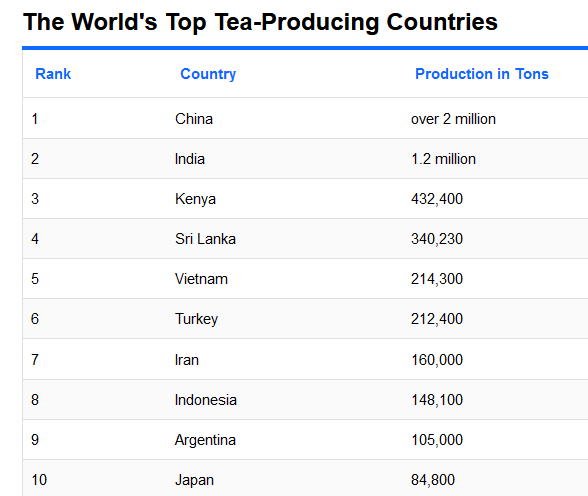

What is Tea
Tea is an aromatic beverage which can be prepared by pouring hot or boiling water over cured or fresh leaves of Camellia sinensis, an evergreen shrub native to East Asia.Today, tea is grown all around the world. Tea has a stimulating effect in humans due to its caffeine content. Tea leaves are processed differently to attain varying degrees of oxidation, thereby producing different tea types, with black tea being the most oxidized and green being the least oxidized.After the tea leaves have been picked, they go through four different processes. The way these processes are carried out determines what type of tea the tea leaves will become:
Withering
Just after being harvested, the leaves are laid out on a tray while air is gently passed over them to reduce their water content. The withering process takes up to 17 hrs and it helps to reduce the moisture content in the leaf, making the leaf flaccid and pliable, and ready for shaping and rolling. Withering also allow aroma and flavor volatiles to develop in the leaves.Rolling
This is when the leaves are rolled horizontally to create long, thin strips. This releases some of the enzymes and oils in the leaves, enhancing their flavor.Oxidation
The tea is laid back out on a tray where the enzymes in the leaves react with the oxygen in the air. This is the step where the leaves start to darken in colour and determines whether a tea will be black, green, oolong, or white. The longer the tea is left to oxidise, the darker the color and deeper the flavor.Drying or firing
Once the leaves reach the perfect color for each variety, the oxidation process is stopped, and the flavor and color are 'locked in' as the tea is passed through hot air driers in a process known as drying or firing.
